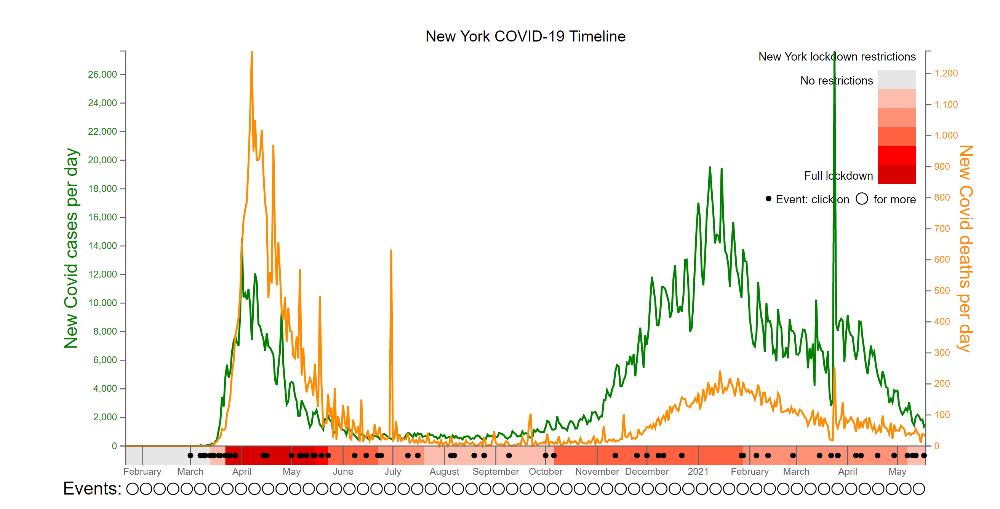

Visualising New York's Covid-19 Lockdowns
Visualisation
Following the Covid-19 timelines for London and Sydney, we expanded the data visualisation to New York State. Created using d3.js, this interactive visualisation shows New York State's daily new cases and deaths over time, against the approximate level of lockdown restrictions and events detailing the changing situation.
Click to read more and view the chart in full.
